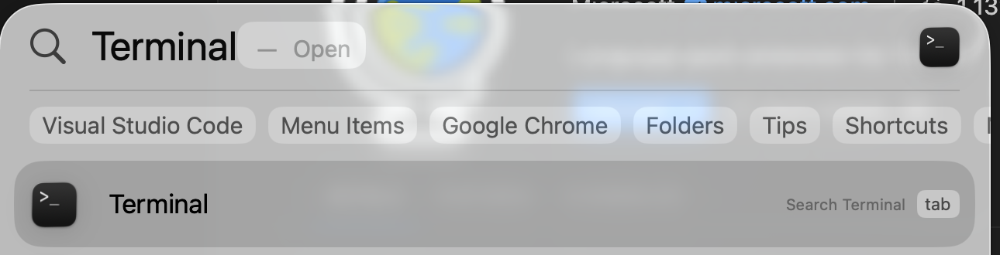

NARRTOS WEAR
Sunucu Kurulumu
NARRTOS WEARDökümantasyon Serisi
NARRTOS WEAR
Sunucu Kurulumu
Telemetri raporlarını toplayan, konumu çözen ve OTA dağıtan sunucuyu sıfırdan kuruyoruz. İlk seferinde 30-40 dakika sürer.


Sunucu ne iş yapar
- Saatler düzenli aralıklarla rapor gönderir: pil, sinyal, çevredeki WiFi ağları ve yazılım sürümü.
- Sunucu programı raporları veritabanına yazar, WiFi ağlarından konumu çözer ve yönetim panelinde gösterir.
- Yeni bir yazılım sürümü çıkınca aynı program bunu cihazlara kablosuz dağıtır.
- İki parçadan oluşur: programı çalıştıran Node.js ve raporların saklandığı PostgreSQL. İkisi de ücretsizdir.
RabbitMQ şimdilik gerekmez. Kurulu değilken program yine çalışır; yalnızca dış sistemlere iletim kapalı kalır.
Terminali açın (macOS)

Kurulum, yazıyla komut girilen bir pencereden yapılır. macOS'ta ⌘ ve boşluk ile Spotlight'ı açın, Terminal yazın ve Enter'a basın.
Terminali açın (Windows / Linux)

Windows'ta Başlat menüsüne PowerShell yazıp Enter'a basın. Linux'ta Ctrl, Alt ve T tuşlarına birlikte basın.
Komutları tek tek yazıp Enter'a basacaksınız. Komut çalışırken bekleyin.
Node.js'i kurun
node --version # v20 ya da daha yüksek npm --version # bir numara vermeli
nodejs.org adresinden LTS sürümünü indirin. Kurulum sihirbazında hiçbir ayarı değiştirmeyin.
Windows'ta kurulum bitince terminali kapatıp yeniden açın; aksi halde yeni programı tanımaz. npm, Node.js ile birlikte gelir.
PostgreSQL'i kurun
- Windows'ta postgresql.org/download/windows adresinden kurulum dosyasını indirin. postgres kullanıcısı için bir şifre belirleyip not edin, portu 5432 bırakın, Stack Builder çıkarsa kapatın.
- macOS'ta postgresapp.com adresinden Postgres.app'i indirin, Uygulamalar klasörüne sürükleyip açın ve Initialize deyin. Kullanıcı adı Mac oturum adınızdır (whoami), şifre yoktur.
- Linux'ta sudo apt install postgresql ile kurun; sonra postgres kullanıcısına ALTER USER ile bir şifre verin.
- Üçünde de sonunda elinizde bir kullanıcı adı ve şifre olur. Bunları altıncı adımda yazacaksınız.
Yalnızca kendi işletim sisteminizin bölümünü uygulayın.
Veritabanını oluşturun
# Linux (Ubuntu / Debian) sudo apt update sudo apt install postgresql sudo -u postgres psql -c "ALTER USER postgres PASSWORD 'buraya-bir-sifre';" # Sonra (her sistemde) psql içinde, sondaki noktalı virgül dahil: CREATE DATABASE corezzle; \q
Program tabloları kendisi oluşturur ama corezzle adlı veritabanının önceden var olmasını bekler.
psql'i Windows'ta Başlat menüsündeki SQL Shell ile, macOS'ta Postgres.app'te veritabanı simgesine çift tıklayarak, Linux'ta sudo -u postgres psql komutuyla açarsınız.
Dosyaları indirin, ayar dosyasını oluşturun
git clone DEPO-ADRESİ cd corezzle-wearos-backend # macOS / Linux # Windows cp .env.sample .env copy .env.sample .env open -e .env notepad .env
git clone komutu dosyaları kopyalar, cd komutu klasöre girer. Bundan sonraki bütün komutlar bu klasörde çalıştırılır.
.env dosyasının adı noktayla başladığı için dosya yöneticileri onu gizler. Terminalden açmak daha kolaydır.
.env: yalnız üç satır
PORT=3001
DB_HOST=localhost
DB_PORT=5432
DB_NAME=corezzle
DB_USER=postgres # macOS'ta Mac oturum adınız
DB_PASSWORD=3-adimda-belirlediginiz-sifre
DB_SCHEMA=wear_os
ADMIN_TOKEN=9f2c...(64 karakter)...a71e
# ADMIN_TOKEN üretmek için:
node -e "console.log(require('crypto').randomBytes(32).toString('hex'))"DB_USER ve DB_PASSWORD alanlarına üçüncü adımda not ettiklerinizi yazın; macOS'ta şifre boş kalır. ADMIN_TOKEN'ı aşağıdaki komutla üretip yapıştırın.
Windows tuzağı: Notepad dosyayı .env.txt olarak kaydedebilir. dir komutuyla adının tam olarak .env olduğunu kontrol edin.
Kur, tabloları oluştur, başlat
npm install # paketleri indirir (1-2 dk; sarı warn normal) npm run migration:up # wear_os şeması + tablolar npm start # -> corezzle-wearos-backend running on port 3001 # Tarayıcıda: http://localhost:3001/admin/ → ADMIN_TOKEN yapıştır → Bağlan
npm install kütüphaneleri indirir. migration:up, corezzle veritabanında wear_os şemasını ve tabloları oluşturur. npm start sunucuyu başlatır.
Terminal penceresini açık bırakın; kapatırsanız sunucu durur. İkinci seferden itibaren yalnızca npm start yeter.
Çalıştığını görün

Tarayıcıda localhost:3001/admin/ adresini açın. Üstteki alana ADMIN_TOKEN'ı yapıştırıp Bağlan deyin. Listelerin boş olması normaldir; henüz rapor gelmedi.
İlk denemede en sık takılınan yerler (1/2)
- node: command not found hatası, Node.js'in kurulmadığını ya da terminalin yeniden açılmadığını gösterir (ikinci adım).
- database "corezzle" does not exist hatası, dördüncü adımın atlandığını gösterir.
- password authentication failed hatası, .env'deki DB_PASSWORD değerinin kurulumda belirlediğinizle aynı olmadığını gösterir.
- role "postgres" does not exist hatası macOS'ta Postgres.app kullandığınızı gösterir. DB_USER, Mac oturum adınız olmalıdır.
Hata mesajı hangi adımı atladığınızı söyler. O adıma dönüp yeniden yapın.
İlk denemede en sık takılınan yerler (2/2)
- connect ECONNREFUSED :5432 hatası PostgreSQL'in çalışmadığını gösterir. Postgres.app'i açın ya da Windows'ta servisi başlatın.
- EADDRINUSE :3001 hatası, sunucunun önceki bir kopyasının hâlâ açık olduğunu gösterir. Diğer terminali Ctrl ve C ile kapatın.
- Panel Bağlan düğmesinde yetkisiz diyorsa token .env'dekiyle aynı değildir. Başında ya da sonunda boşluk kalmış olabilir.
- .env dosyasını değiştirdiniz ama etkisi yoksa unutmayın: dosya yalnızca başlangıçta okunur. Sunucuyu yeniden başlatın.
Docker kullanıyorsanız docker compose up yalnızca programı başlatır, PostgreSQL'i içermez. Mac ve Windows'ta DB_HOST değeri host.docker.internal olmalıdır.
Konum sağlayıcısı
- GEOLOCATE_URL varsayılan olarak api.beacondb.net/v1/geolocate adresidir; açık ve anahtarsızdır. GEOLOCATE_KEY doluysa adrese key parametresi eklenir.
- İstek biçimi Ichnaea standardıdır ve Google Geolocation API ile birebir aynıdır. Sağlayıcı değiştirmek için iki değişken yeter.
- beaconDB ile boru hattı çalışır ama bölgesel kapsama zayıfsa IP tahminine düşer. Google ile yaklaşık 19 metrelik gerçek çözüm alınır; bu doğrulandı.
- Google'da ayda 10 bin istek ücretsizdir. Konum önbelleği, maliyeti cihaz başına ayda birkaç yüz çağrıya indirir.
Zaman aşımı GEOLOCATE_TIMEOUT_MS ile 4 saniye, önbellek süresi GEOLOCATE_CACHE_TTL_MS ile 10 dakikadır.
Mesaj kuyrukları
{
"deviceType": "TRACKER",
"imei": "E4B063A764CC",
"dateTime": "2026-07-21T01:46:48Z",
"latitude": 41.0289898, // yalnızca gerçek çözüm; yoksa 0
"longitude": 29.2229154,
"locationAccuracy": 18.9,
"gsmSignalQuality": 20,
"wifi": [ {"mac": "...", "dbms": -53}, ... ],
"softwareVersion": "1.4.81",
"battery": null
}amq.direct üzerinden iki kalıcı kuyruk beslenir. live-data-queue her raporda, location-data-queue yalnızca gerçek bir konum çözümü olduğunda mesaj alır.
VTS_ENABLED değeri true olmadıkça iletim deneme modunda çalışır. Araca özgü alanlar (CAN, yakıt) bilinçli olarak yoktur.
Cihazlar sekmesi

Cihazlar sekmesinde son görülme zamanı, mevcut sürüm ve hedef sürüm ataması yer alır. Manifest ve events uçları açıktır; telemetry POST açık, GET yönetici yetkisi ister; releases ve devices uçları yöneticiye özeldir.
Kurulumu doğrulama
# 1) Panel açılıyor mu
curl -s -o /dev/null -w "%{http_code}\n" http://localhost:3001/admin/
# 2) Admin yetkisi çalışıyor mu (boş liste de olsa 200)
curl -s -H "Authorization: Bearer $ADMIN_TOKEN" \
http://localhost:3001/api/wear-os/telemetry
# 3) Sahte bir rapor gönderin; cihaz beklemeden boru hattını test eder
curl -s -X POST http://localhost:3001/api/wear-os/telemetry \
-H "Content-Type: application/json" \
-d '{"device_id":"E4B063A764CC","wifi_rssi":-53,
"wifi":[{"mac":"A4:B1:C2:D3:E4:F5","rssi":-53}],
"uptime_s":887,"firmware_version":"1.4.81","heap_free":970288}'Üçüncü komuttan sonra panelin Telemetri sekmesinde yeni bir satır görünmelidir.
Konum sütunu boşsa sağlayıcı erişim noktalarını tanımamıştır. Gri koordinat, IP tahmini demektir.
NARRTOS WEAR
Sunucu kendi bilgisayarınızda çalışıyor.
Cihaz tarafı için Telemetri ve Konumlandırma dökümanına bakın. corezzle.com
İzlediğiniz için teşekkürler
Sıradaki videoSıradaki video
Oynatma listesiOynatma listesi
Abone olunYeni bölümlerden haberdar olun
corezzle.com · github.com/corezzle/NarRTOS-Wear